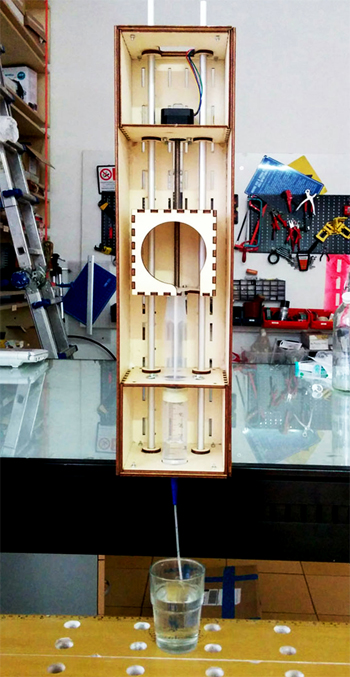
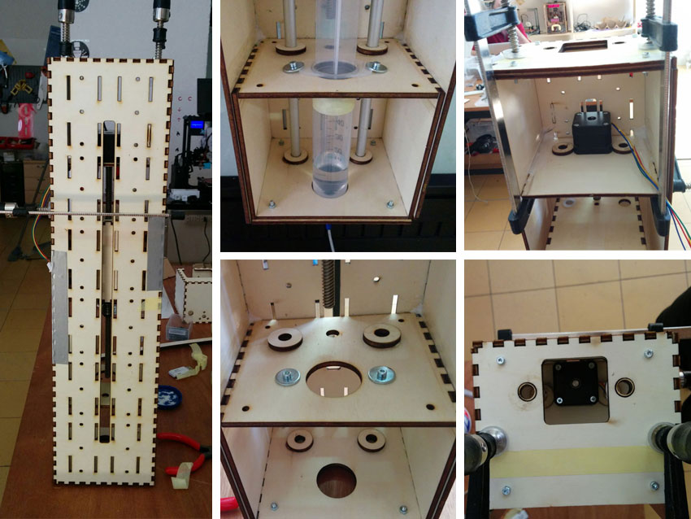

The Granatina Machine: a linear pneumatic extruder
Assignment: make a machine, including the end effector
build the passive parts and operate it manually
document the group project and your individual contribution.
As group assignment, we decided to use the 3 axis and 3 gestalt nodes in order to create a machine able to pick and release liquids, using a preumatic extruder equipepd qith a sirynge.
All three collaborate to develop this machine. In particular:
- I mainly focused my work on developing the E axis and the pneumatic system to pick the liquid using the syringe. This was interesting for me because of my final project that at the begin had to work with syromges. I will document below this work
- Costantino has mainly worked on developing the X and Z axis and connecting the gestalt nodes.
- Massimo has mainly worked on developing the GUI and the Algorithm (or better, learning ho to make it). In particular, this assignment has to be finally implemented.
Below the original scheme of the three axis. Actually, all axis have the same lenght, since they derive from the stage design of the gestalt project. I focused on the extruder, the second Z axis named "E".
Extruder development
For the group project I developed the pneumatic extruder axe of the Granatina machine that integrate a syringe aspiring and releasing liquids to be moved from one point (a glass) to an other (an other glass) and make the mix.

I modified the original stage design of the the Gestalt project, integrating a syringe in the stage and making the stage with a more resistant material (plywood 4 mm thick) since the pression necessary for operating the syringe would be too high for a cardboard stage. Cardboard stages would have shown problems also of stability.
I designed the new stage enlarging the whole element in order to host the syringe and leaving also space for hands during syringe operation (insertion and removal). I have got inspiration studying the extruder of an FDM 3D printer that has a preumatic extruder to print fused chocolate (3DRag printer).
Mechanical details

The Gestals nodes
We follow all the tutorials to use Fabnet, and connected Gestalt nodes for the three axis. Moreover, a first version of the machine has been prototyped laser cutting cardboard and drawing the first version of a basic GUI to control the steppers. As shown in the pictures we did'nt use the suggested cable for RS485. We use instead a simpler bord with FTDI chip (to use it via Usb) and a RS485 ic. As next step I'll design a new fabnet with a RS485 chip. It would be a good to save money and adding some features on that board.
As power source we use a power bench supply 12V DC (current about 2 amps).
Assembling the machine
Testing the machine
We follow all the instructions from various tutorials in the Fab academy archive. We download Python, then install wxGestalt in order to control and command the gestalt nodes and moving the machine. We use the template provided by the tutorial to move the nodes in order to test the machine. The final GUI has to be implemented as follow. Nodes 1 (X axis) has been tested alone to understand how to command and move it. Finally the same procedure has been adopted for the other three axis and finally Granatina works.
Creating the GUI and final algorithm to move the three axis is the final step to complete the machine. The GUI will have 7 buttons.
X axis moves left and right the syringe
- Z axis moves up and down the syringe
- E axis moves up and down the piston of the syringe
GUI
The simplest solution is to create a simple GUI which have 6 buttons. two buttons for each Axis as follow:
X Axis: Button “-“ (less) and “+” (more)
Z Axis: Button “-“ (down) and “+” (up)
E Axis Button “-“ (down) and “+” (up)
Home Button: X0, Z0, E0
To control the machine we rely on the good interface created by Massimo Menichinelli. See here!
In order to make Granatina works we simply modified the moves: